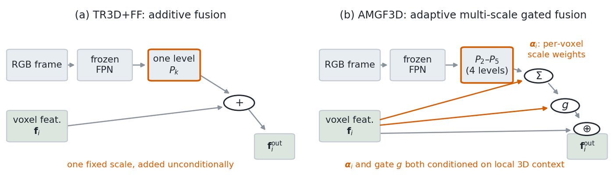
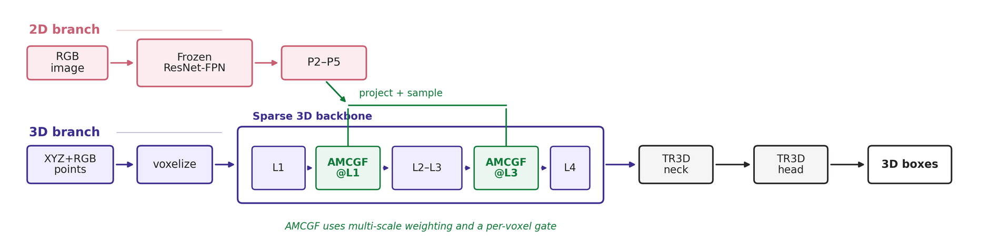
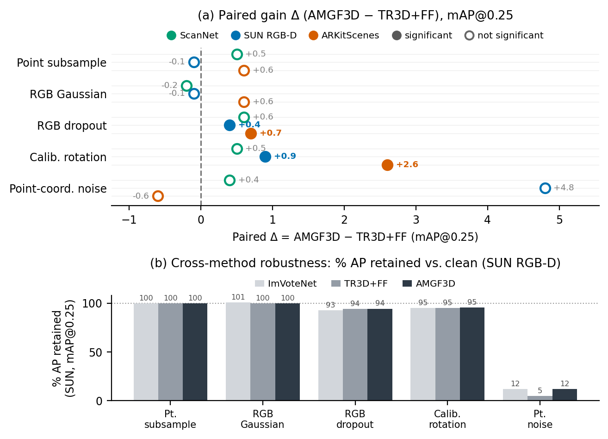
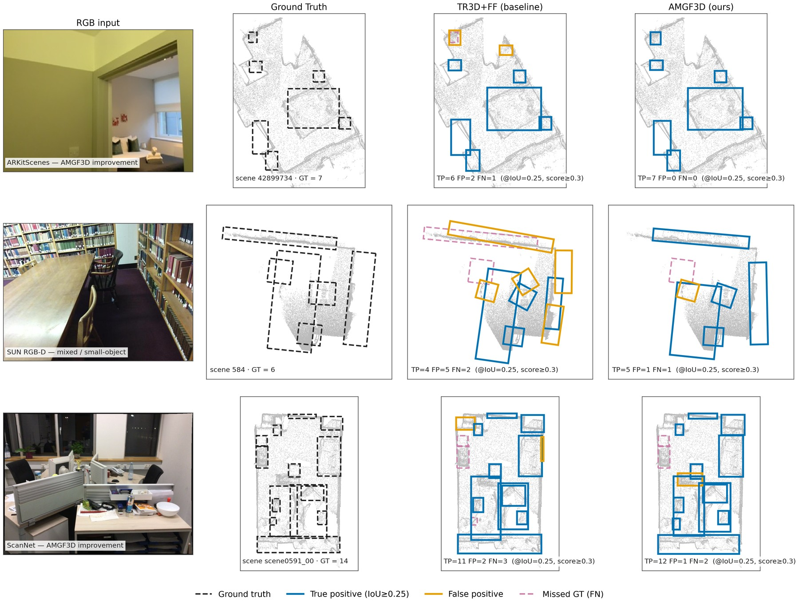
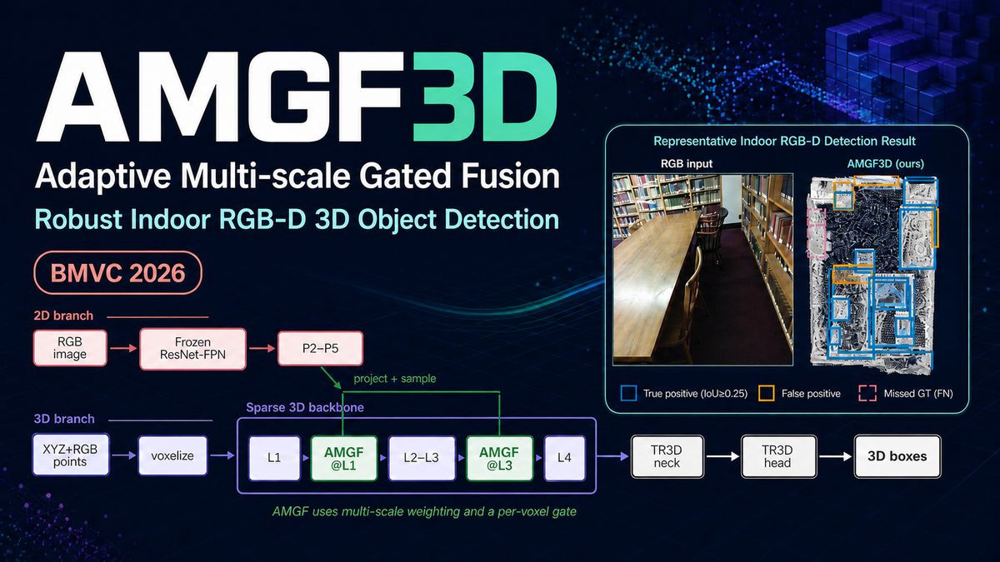

Adaptive Multi-scale Gated Fusion for Robust Indoor RGB-D 3D Object Detection
Fully convolutional sparse-voxel detectors are efficient for indoor 3D object detection, but RGB-D detection pipelines can degrade when geometry, appearance, or camera-depth alignment is imperfect. Projection-based 2D-3D fusion can help, yet simple fusion baselines often assume that projected correspondences are reliable and that one fixed image-feature scale is suitable for all object sizes. These assumptions do not hold for indoor scenes with depth discontinuities, occlusion, and large scale variation. We propose Adaptive Multi-scale Gated Fusion (AMGF3D), a selective RGB-D fusion framework for sparse-voxel detectors. AMGF3D aggregates features from a 2D Feature Pyramid Network (P2–P5) using per-voxel scale weights conditioned on local 3D context, and uses a lightweight feature-conditioned gate to modulate projected image evidence before injecting it into the 3D stream. Fusion is applied at two backbone stages to combine lower-level appearance detail with higher-level semantic cues while retaining single-pass inference. Beyond clean accuracy, we evaluate robustness under controlled, multi-seed perturbations. On SUN RGB-D and ARKitScenes, AMGF3D is significantly more robust than additive fusion under the two pre-specified primary perturbations, RGB patch dropout and calibration rotation (six matched seeds, with Wilcoxon and 95% CI support), with gains that persist at mAP@0.50. Across all three benchmarks we observe no statistically significant underperformance within the tested suite. In a SUN RGB-D cross-method comparison, it is best or tied-best on the perturbations that meaningfully degrade accuracy. AMGF3D remains competitive on clean ScanNet, SUN RGB-D, and ARKitScenes evaluation, improves most clearly on small objects, and adds +0.6% parameters and a modest ~9% runtime cost over additive fusion.
Prior projection-based fusion ties each 3D location to a single, fixed-scale 2D descriptor and injects it unconditionally. AMGF3D removes both assumptions.
A per-voxel, multi-scale, gated RGB-D fusion module that injects 2D pyramid features into a sparse-voxel backbone at two stages, conditioned on local 3D context.
A statistically paired evaluation across three benchmarks — six matched seeds per dataset, pre-specified primary perturbations, and an exact-Wilcoxon with 95% CI criterion.
A per-component ablation under perturbation isolates the source: adaptive multi-scale aggregation and dual-stage placement each carry a significant share, gating a smaller one.
Competitive on clean evaluation at both IoU thresholds, with the clearest gains on small objects, at +0.6% parameters and ~9% runtime over additive fusion.
What changes relative to additive fusion (TR3D+FF), at a single fusion stage.

The additive baseline samples a single fixed FPN level and adds it to every active voxel with the same weight.
AMGF3D samples P2–P5 and mixes them with per-voxel weights predicted from the voxel's own 3D feature, then gates the resulting residual on the joint geometry–appearance pair.
A voxel whose projected evidence disagrees with its geometry can therefore suppress that evidence, instead of receiving it unconditionally.
Every active voxel centre is projected once and bilinearly sampled at all four FPN levels — P2 finest through P5 coarsest — rather than at one fixed level.
zv(l) = sample(F(l), uv / sl)
The voxel's own 3D feature predicts a softmax mixture over those four levels, so the effective descriptor resolution varies per voxel instead of being fixed by the architecture.
αv = softmax(Wα ReLU(Wβ fv))
A scalar gate on the joint geometry–appearance pair scales the residual, so appearance the local geometry contradicts can be damped before it enters the 3D stream.
gv = σ(wgT[fv ; z̄v] + bg)
The update is a scaled residual, fvout = fv + λ · gv · Φ([fv ; z̄v]) with λ = 0.1, applied at an early (s = 1) and a later (s = 3) backbone stage.
A sparse 3D stream processes colored point clouds while a frozen ResNet-FPN extracts image features; fusion happens at two backbone stages.

Projected FPN descriptors are fused into active voxels at backbone layers 1 and 3 using adaptive scale weighting and per-voxel gating, before the TR3D neck and detection head.
The module is applied at an early stage (s = 1) and a later stage (s = 3), retaining single-pass inference.
The central result. Absolute mAP@0.25 for the additive-fusion baseline TR3D+FF and AMGF3D, averaged over six matched training seeds per dataset.
| Perturbation (level) | ScanNet TR3D+FF |
ScanNet AMGF3D |
SUN RGB-D TR3D+FF |
SUN RGB-D AMGF3D |
ARKitScenes TR3D+FF |
ARKitScenes AMGF3D |
|---|---|---|---|---|---|---|
| Clean | 74.5 | 75.6 | 68.7 | 69.1 | 76.1 | 77.4 |
| Point subsample (50%) | 69.6 | 70.1 | 68.6 | 68.5 | 75.2 | 75.8 |
| RGB Gaussian (σ=0.1) | 71.0 | 70.8 | 68.6 | 68.5 | 75.3 | 75.9 |
| RGB dropout (50%) | 71.1 | 71.7 | 64.5 | 64.9 | 75.3 | 76.0 |
| Calib. rotation (3°) | 66.7 | 67.2 | 65.0 | 65.9 | 61.7 | 64.3 |
| Point-coord. noise (σ=0.10 m) | 0.7 | 1.1 | 3.3 | 8.1 | 4.1 | 3.5 |
Bold marks AMGF3D entries significantly more robust than TR3D+FF under the paired-seed criterion. RGB dropout and calibration rotation are the two pre-specified primary perturbations; point-coordinate noise is a secondary descriptive check.

(a) Paired difference Δ = AMGF3D − TR3D+FF in mAP@0.25 at representative severities, averaged over six matched seeds; filled markers are significant, hollow are not. (b) SUN RGB-D cross-method robustness as AP retained relative to clean.
mAP@0.25 / @0.50 in the FCAF3D/TR3D Best (Mean) convention. AMGF3D stays competitive on clean evaluation without being the headline claim.
| Method | Venue | Inputs | ScanNet @0.25 |
ScanNet @0.50 |
SUN RGB-D @0.25 |
SUN RGB-D @0.50 |
ARKit @0.25 |
ARKit @0.50 |
|---|---|---|---|---|---|---|---|---|
| Sparse-voxel reproductions (matched pipeline) | ||||||||
| FCAF3D | ECCV'22 | PC | 71.5 (70.7) | 57.3 (56.0) | 64.2 (63.8) | 48.9 (48.2) | 72.3 (71.7) | 60.5 (59.6) |
| TR3D | ICIP'23 | PC | 72.9 (72.0) | 59.3 (57.4) | 67.1 (66.3) | 50.4 (49.6) | 75.4 (74.9) | 61.3 (60.7) |
| TR3D+FF | ICIP'23 | PC+RGB | 75.3 (74.5) | 60.1 (58.9) | 69.4 (68.7) | 53.4 (52.2) | 76.7 (76.1) | 62.5 (61.7) |
| Quoted from source papers | ||||||||
| SPGroup3D | AAAI'24 | PC | 74.3 (73.5) | 59.6 (58.3) | 65.4 (64.8) | 47.1 (46.4) | — | — |
| V-DETR | ICLR'24 | PC | 77.8 | 65.9 | 67.5 | 50.4 | — | — |
| UniDet3D† | AAAI'25 | PC | 77.5 (77.0) | 66.1 (65.0) | — | — | — | — |
| AMGF3D (Ours) | — | PC+RGB | 76.1 (75.6) | 60.1 (59.0) | 69.7 (69.1) | 53.6 (52.3) | 77.8 (77.4) | 63.9 (62.7) |
The sparse-voxel rows (FCAF3D, TR3D, TR3D+FF, AMGF3D) are our own reproductions under one matched pipeline — same frozen 2D backbone, splits, schedule and evaluation code — and are not quotations of those papers' printed numbers, so small differences are expected. Other rows are quoted from their source papers. Bold marks the best entry per column. †For UniDet3D we quote its single-dataset ScanNet result (trained on ScanNet alone) for a like-for-like comparison; its headline numbers use joint training over six datasets, and its ARKitScenes protocol is not comparable to ours.
On ARKitScenes, mAP@0.25 over six matched training seeds. Each row removes one component from the full model.
| Variant | Clean | Calib. 3° | Drop. 50% |
|---|---|---|---|
| TR3D+FF (additive) | 76.1 | 61.7 | 75.3 |
| early-only (−late stage) | 77.1 | 61.9 | 75.7 |
| late-only (−early stage) | 76.8 | 62.5 | 75.4 |
| single-scale (−multi-scale) | 77.2 | 62.7 | 75.9 |
| no-gate (−gate) | 77.1 | 63.4 | 75.8 |
| AMGF3D (full) | 77.4 | 64.3 | 76.0 |
Under calibration rotation every appearance-side component contributes: removing multi-scale aggregation costs 1.6 mAP@0.25, the early stage 1.8, and the late stage 2.4 (six per-seed deltas of one sign, 95% CI excludes zero, exact Wilcoxon p = 0.03125). Under clean input and RGB dropout all component deltas fall within seed noise (≤ 0.6), which is why these choices are motivated by robustness and not by clean accuracy.
Per-scene predictions on ARKitScenes, SUN RGB-D, and ScanNet.

Columns: paired RGB frame, bird's-eye view ground truth, TR3D+FF, and AMGF3D. Box colors denote TP/FP/FN at IoU ≥ 0.25. On ScanNet and ARKitScenes the single posed RGB frame covers only part of the reconstructed scene, and the BEV is cropped for legibility.
If you find this work useful, please cite:

Summary card — open full size ↗